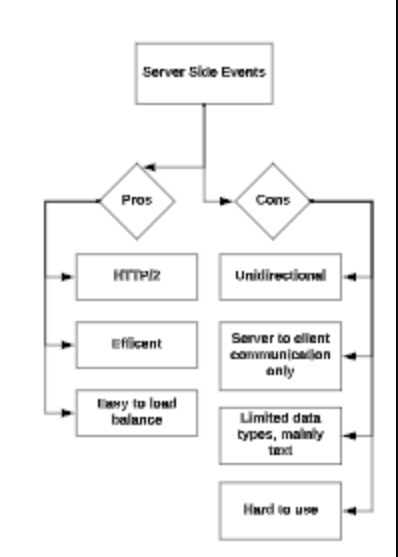

Functional Requirement
Functional requirements are the essential elements that the product cannot function without. They dictate the core features and functionalities of the system, ensuring that users can complete the fundamental tasks effectively. Here are some key aspects to consider:
-
Core Features vs. Good-to-Have
- Identify the Core Flows: Begin by discerning the primary actions users need to perform within your application. These are the core features that should always work seamlessly.
- Good-to-Have Features: Beyond the essentials, there are often numerous additional features that enhance the user experience. For instance, in a social media application like Facebook, think about the various post formats users might want, such as text-based posts, photo uploads, video uploads, polls, location check-ins, and more.
-
Device and Platform Support
- Device and Platform Considerations: Determine which devices and platforms your application needs to support. Will it be accessible on desktops, tablets, and mobile devices? Ensuring a consistent user experience across various platforms is crucial.
-
Offline Support
- Offline Functionality: Assess whether your application requires offline support. Depending on the nature of your product, users may need to interact with it even when they have no internet connectivity.
-
User Demographics
- User Personas: Define the main users of your product. Understanding your target audience's needs, preferences, and pain points is vital for designing a user-centric frontend.
Non-Functional Requirements
In addition to functional requirements, non-functional requirements are enhancements that improve the product but are not strictly essential for its basic usability. These often focus on aspects such as performance, scalability, security, user experience, and more:
-
Performance
- Performance Metrics: Specify performance requirements, including how fast pages should load, how responsive user interactions must be, and acceptable latency thresholds.
-
Security
- Security Measures: Consider security requirements, which encompass safeguarding user data, implementing authentication and authorization mechanisms, and protecting against common vulnerabilities like Cross-Site Scripting (XSS) and SQL Injection.
-
Availability
- Availability Goals: Define availability requirements, including uptime targets and strategies for mitigating downtime, such as load balancing and redundancy.
-
Observability
- Monitoring and Observability: Plan for observability by integrating tools and techniques for monitoring application health, logging, and error tracking.
-
Tracking
- Analytics and Tracking: Establish tracking mechanisms to gather user data and insights, which can inform future enhancements and improvements.
-
Accessibility (A11y)
- Accessibility Standards: Ensure that your frontend adheres to accessibility standards (A11y) to make your application usable by individuals with disabilities.
-
Internationalization
- Global Reach: If applicable, think about internationalization to support users from diverse regions with different languages and cultural preferences.
-
Volume
- Scalability and Volume Handling: Consider how your application will handle increased volumes of data or traffic and implement strategies for scaling when necessary.
By meticulously defining both functional and non-functional requirements, you lay a strong foundation for your frontend system design. These requirements act as guiding principles throughout the development process, ensuring that your system meets user expectations and industry standards.
Architecture and High-Level Design
In the realm of Frontend System Design interviews, having a well-structured architectural design is crucial for building scalable and maintainable frontend applications. This section explores the architectural components and design considerations that form the backbone of your frontend system.
Components of the Architecture
To begin, let's break down the key components of a frontend architecture:
-
Server
In Frontend System Design interviews, it's common to treat the server as a black box. This means you can assume that it exposes APIs accessible via HTTP or WebSockets. The server is responsible for handling requests, processing data, and sending responses to the client.
-
View
The view represents the user interface and what the user sees on their screen. It typically contains smaller subviews within it, creating a hierarchical structure. The view may also contain client-side-only state, which is data that doesn't need to be shared with the server but is crucial for the user interface's functionality.
-
Controller
The controller is the module responsible for responding to user interactions and processing data from the store or model in a format that the view expects. In smaller applications with minimal data flow between modules, a controller may not be necessary. However, it becomes essential in larger, more complex systems, where it acts as an interactions controller, managing communication between various components.
-
Model/Client Store
The model or client store is where your application's data resides. Stores hold data that will be presented to the user through views. In the context of a Frontend System Design interview, you can consider stores to be app-wide. In real-world applications, you might have multiple stores, potentially nested within one another to manage different types of data.
Separation of Concerns
A fundamental principle in frontend architecture is the separation of concerns. Each component should serve a modular purpose and encapsulate a specific set of functionality and data. Consider the following aspects:
-
Component Purpose
Define the primary purpose of each component. For example, the server's purpose is data retrieval and processing, while the view's purpose is user interface rendering.
-
Data Management
Determine what data each component should contain. For instance, the model or client store holds application data, while the view may contain user interface state.
-
Inter-component Communication
Explore how each component can serve the rest of the system. Identify how they interact and exchange data to ensure smooth operation.
Computation Location
A critical architectural decision revolves around where computation should occur. For example, when filtering search results or calculating the total amount for a shopping cart, should the work be done on the server or the client? This decision is both question-dependent and context-dependent, and it has trade-offs:
-
Server-Side Computation
Offloading computation to the server reduces the workload on client devices. However, it may increase network traffic and latency.
-
Client-Side Computation
Performing computation on the client can enhance responsiveness but may demand more processing power and memory from the user's device.
The choice between server-side and client-side computation depends on factors like the specific use case, user experience goals, and system performance requirements.
By understanding these architectural components and design considerations, you'll be better equipped to tackle Frontend System Design interviews. Remember that a well-thought-out architecture forms the backbone of any successful frontend system, enabling scalability, maintainability, and a seamless user experience.
Data Model: Managing Client-Only Data
In frontend system design, a crucial aspect is the management of client-only data, which encompasses information that resides exclusively on the client side and does not need to be transmitted to the server for database storage. Client data can be further categorized into two distinct types:
Data to be Persisted
The first category of client-only data includes information that is meant to be persisted or stored in the server's database. This type of data typically originates from user interactions and input. Key points to consider:
- User Input Data: This category includes data entered by users into various form fields or input elements on your application. Examples may range from user profiles, posts, comments, to product reviews.
- Server Interaction: For this data to be useful in the long term, it needs to be sent to the server, processed, and saved in the database. Proper validation, sanitization, and security measures should be applied before persisting it.
- Data Fields Identification: When designing your frontend system, it's crucial to identify which data fields fall into this category. Clearly distinguish between data originating from the server and data generated by user interactions on the client side.
Ephemeral Data
The second category of client-only data is referred to as ephemeral data. This type of data represents temporary state information that has a short lifespan and is not intended for long-term storage. Common examples include:
- Form Validation State: Information about whether a user's input in a form is valid or not. This data helps in providing real-time feedback to users but is not needed beyond the current session.
- Current User Interface State: Data that tracks the current state of the user interface, such as the active tab, expanded or collapsed sections, or temporary user preferences. These details enhance the user experience but don't require persistence.
- Session-Specific Data: Data tied to a specific browsing session, which is typically acceptable to lose when the user closes the browser tab. Examples may include shopping cart contents, temporary drafts, or session-specific preferences.
Data Fields Identification
When designing your frontend application, it's crucial to identify each data field's nature—whether it originates from the server, falls under the category of data to be persisted, or is considered ephemeral. This clarity not only ensures proper handling and storage but also aids in designing efficient data management strategies.
In summary, effective management of client-only data is an integral part of frontend system design. By categorizing data into those to be persisted and ephemeral, you can make informed decisions about how to handle, store, and validate information to create a seamless and user-friendly application experience.
Interface Design
Interface Definition and API Design: Making Informed Choices
In the world of frontend system design, one of the critical decisions you'll face is defining the interfaces through which different components communicate and exchange data. These interfaces, or APIs (Application Programming Interfaces), can take various forms, each with its own trade-offs. Let's explore the options and their pros and cons:
Polling
Polling vs. Long Polling: Pros and Cons
Traditional Polling
Pros:
- Simplicity: Polling involves making periodic requests to the server, which is straightforward to implement.
- Easy to Load Balance: Distributing requests across multiple servers is relatively simple.
- HTTP/2 Compatibility: It can work over HTTP/2, benefiting from its features.
Cons:
- Long Latency: Polling may lead to delays in data updates as it relies on predefined time intervals.
- Connection Timeouts: Frequent polling can result in connection timeouts and increased server load.
- Traffic Overhead: Continuously sending requests, even when there's no new data, can create unnecessary traffic.
Long Polling
Pros:
Shares many pros with traditional polling.
Cons:
- Long Latency: Similar to polling, it can still suffer from delays in data updates.
- Connection Timeouts: It inherits the risk of connection timeouts.
- Traffic Overhead: Continuous requests, potentially with long waits for responses, can lead to traffic overhead.
Web Sockets
WebSocket Pros and Cons
Pros:
- Duplex Communication: WebSockets offer bidirectional communication, enabling real-time data exchange.
- Speed: They provide a super-fast communication channel, ideal for applications requiring low-latency updates.
- Single TCP Connection: Maintains a single TCP connection with the server, reducing overhead.
- Harder to Load-Balance: Unlike HTTP, WebSockets can be challenging to load balance efficiently.
Cons:
- Resource-Intensive: Keeping WebSocket connections open can be resource-intensive, especially on the client side.
- Server Load: Poorly configured servers may struggle to handle a large number of open WebSocket connections.
- Firewall/Proxies: Some network configurations may cause issues with WebSocket connections.
Server Sent Events
Server-Sent Events (SSE) Pros and Cons
Pros:
- HTTP/2 Benefits: SSE benefits from HTTP/2 features such as gzipping and multiplexing.
- Efficiency: SSE only sends necessary information as text, conserving resources.
- Easy to Load Balance: SSE can be efficiently load balanced.
Cons:
- Unidirectional: SSE allows only server-to-client communication, making it unsuitable for scenarios requiring bidirectional data exchange.
- Limited Data Types: SSE primarily deals with text data and lacks support for more complex data structures.
Rest API
Pros and Cons of REST APIs
Pros:
- HTTP/2 Compatibility: REST APIs can leverage HTTP/2, benefiting from its performance enhancements.
- Simplicity: RESTful architecture is well-understood and relatively simple to implement.
- Easy to Load Balance: Distributing REST requests across multiple servers is straightforward.
Cons:
- Latency: REST APIs can suffer from latency, particularly in scenarios where frequent updates are required.
- Connection Timeouts: As with polling, connection timeouts can be an issue.
- Traffic Overhead: RESTful requests can introduce traffic overhead, especially when requesting large amounts of data.
GraphQL
Pros and Cons of GraphQL
Pros:
- Modern API: GraphQL offers a more modern approach to API design, allowing clients to request exactly the data they need.
- Type Safety: GraphQL's type system enhances API safety and reduces errors.
- Advanced Caching: GraphQL clients can implement advanced caching strategies for improved performance.
Cons:
- Potential for Latency: Depending on the complexity of the queries and the server's configuration, GraphQL requests can experience latency.
- Connection Timeouts: Like REST, GraphQL may encounter connection timeouts.
- Traffic Overhead: GraphQL queries can be verbose, leading to potential traffic overhead.
Common Aspects of APIs
Regardless of the chosen API type, all APIs share some common considerations:
- Type of Request: Define the types of requests the API can handle (e.g., GET, POST), including their purpose and expected outcomes.
- Status Codes and Error Handling: Establish clear status codes and error-handling procedures to ensure robust and predictable interactions.
- Throttling and Debouncing: Implement throttling and debouncing mechanisms to manage the frequency and volume of API requests.
- Pagination: If applicable, design pagination strategies to efficiently retrieve and display large datasets.
API for UI Component System Design
When designing a UI component, the "Interface" section of your design should cover customization options for the component, much like the props in React components. Discuss how users can configure and interact with the component to meet their specific needs and expectations. In conclusion, the choice of API design depends on your specific project requirements, including factors like real-time needs, latency tolerance, and complexity. By understanding the trade-offs associated with each option, you can make informed decisions to create efficient, responsive, and user-friendly frontend systems.
Optimizations and Deep Dive in Frontend System Design
In the world of frontend system design, achieving optimal performance, ensuring network efficiency, and providing a seamless user experience are paramount. Here's a deep dive into various aspects of optimization and best practices:
Performance
Network
- Compression: Utilize techniques like gzip or request headers like Accept-Encoding: br to reduce network payload size, leading to faster load times.
- Caching: Implement caching strategies to store and reuse responses, reducing the need for redundant network requests.
- Debounce / Throttle: Rate-limit network requests using debounce or throttle mechanisms to prevent excessive server loads.
- Batching Requests: Group related requests and send them together to minimize the number of network calls.
- Image Optimizations: Optimize image size and quality to reduce page load times. Consider using responsive images to load the appropriate size for different devices.
- HTTP/2: Take advantage of HTTP/2's features, such as multiplexing and header compression, to enhance network performance.
-
Bundle Splitting:
- Vendor Bundles: Separate vendor libraries and dependencies into a distinct bundle to take advantage of browser caching for common libraries.
- App Bundle: Organize your application code into a main bundle to improve initial loading times.
- Lazy Loading: Split your code into smaller, lazily loaded bundles that are only fetched when needed to reduce the initial load size.
Rendering
- Above-the-Fold Content: Prioritize rendering content that is immediately visible to users (above the fold) to provide a perceived performance boost.
- Critical Resource Prioritization: Load critical resources (CSS, JavaScript) early, while deferring non-critical resources to improve page loading speed.
- Tree Shaking: Implement tree shaking to eliminate dead code and reduce the size of your JavaScript bundles.
- Unused Bundle Elimination: Ensure that unused bundles are not included in the final build to optimize resource loading.
- TTI (Time to Interactive): Focus on improving the time it takes for your application to become interactive and responsive to user input.
- First Contentful Paint (FCP): Optimize for FCP, which is the moment when the browser renders the first bit of content from the DOM, indicating to the user that the page is loading.
- DOM Tree Optimization: For long lists or tables, use virtualization to render only the visible elements, improving both rendering and user experience.
- Replacing Nodes: Instead of creating new DOM nodes, consider updating existing ones with data to reduce unnecessary overhead.
Server-Side Rendering
JavaScript Optimization
- Avoid blocking the main thread with time-consuming JavaScript operations. Utilize web workers for CPU-intensive tasks to maintain a responsive UI.
Style Guide
- Adhere to coding style guides and best practices to ensure maintainability and code quality.
Global Environment
- Be cautious about modifying the global environment to prevent unintended side effects and conflicts.
JS Preloading
- Use resource preloading techniques to load JavaScript files asynchronously and improve page performance.
Selective Imports
- Import only the functions and modules you need instead of including entire files to reduce unnecessary code execution.
CSS
- Avoid Reflows: Reflows can be expensive in terms of performance. Aim to minimize them by optimizing your CSS.
- Prefer CSS animations over JavaScript animations whenever possible, as they are often more efficient.
- Use straightforward and simple class names in your CSS to keep your styles maintainable.
Application Cache
- Implement a caching strategy for CSS, JavaScript, and images to reduce network requests and enhance page load times.
User Experience
Mobile-Friendly Design
- Ensure that your application is responsive and mobile-friendly, considering various screen sizes and orientations.
- Implement loaders, error states, and empty states to provide informative feedback to users.
- Handle rendering images of different dimensions gracefully to maintain a cohesive user experience.
Network
- Handle various network states, such as success, pending, and error states, to guide users through different stages of interactions.
- Prevent race conditions by managing concurrent requests, and avoid duplicate requests, especially after user actions like form submissions.
- Consolidate requests by using techniques like debounce, throttle, or rate limiting to minimize server load.
- Leverage caching effectively to reuse previous responses and reduce the need for network round trips.
Accessibility (a11y)
Accessibility and Design Best Practices
1. Implement Keyboard Navigation Features
Include a list of shortcuts and ensure tappable items are accessible via keyboard input.
2. Use Semantic HTML5 Elements
Add ARIA roles, states, and properties to enhance accessibility for users with disabilities.
3. Ensure Proper Color Contrast
Consider supporting dark mode for improved readability.
4. Design with Various Text Sizes and Multilingual Support
Consider different text sizes and multilingual support for a broader user base.
5. Test for Cross-Device Compatibility and Edge Cases
Ensure your application functions seamlessly across different devices and handles edge cases effectively.
Security
- Protect your application against cross-site forgery attacks (CSRF) by following OWASP's XSS prevention guidelines.
These deep-dive optimizations and best practices should serve as a solid foundation for designing frontend systems that are performant, user-friendly, accessible, and secure. Remember that the specific optimizations you choose will depend on your project's unique requirements and constraints.
Ut enim ad minim veniam, quis nostrud exercitation ullamco laboris nisi ut aliquip ex ea commodo consequat.
Ut enim ad minim veniam, quis nostrud exercitation ullamco laboris nisi ut aliquip ex ea commodo consequat.
Ut enim ad minim veniam, quis nostrud exercitation ullamco laboris nisi ut aliquip ex ea commodo consequat.
Server Side Rendering vs Client Side Rendering
Server-side rendering (SSR) and client-side rendering (CSR) are two different approaches to rendering web applications, and they each have their own set of advantages and disadvantages. Below, I'll outline the pros and cons of both Server-side rendering and Client-side rendering in the context of React.
Server-side Rendering (SSR):
Pros:
- Initial Page Load: SSR sends a fully rendered page to the client, which means that the user can see content sooner because the server generates the HTML on the initial request.
- SEO-Friendly: Search engines can easily crawl and index the content because the page is delivered with all the necessary markup. This is particularly important for content-heavy applications.
- Performance for Low-Powered Devices: SSR can perform better on low-powered devices or slow network connections because the server sends pre-rendered HTML.
- Graceful Degradation: If JavaScript fails on the client-side, SSR provides a fallback mechanism, ensuring that the user still sees content.
Cons:
- Server Load: SSR can put a higher load on the server because it's responsible for rendering the page for each request.
- Complexity: Implementing SSR can be more complex, especially if you have a complex application that relies heavily on client-side interactivity.
- Slower Interactivity: While the initial page load may be faster, subsequent interactions may be slower because the client has to make additional requests to the server.
Client-side Rendering (CSR):
Pros:
- Faster Interactivity: Once the initial JavaScript bundle is loaded, subsequent interactions can be very fast because the client can update the DOM without needing to go back to the server.
- Reduced Server Load: The server is primarily responsible for sending the initial JavaScript bundle and data. After that, the client handles rendering.
- Rich Client Interactions: CSR is great for applications that rely heavily on client-side interactions, as it provides a more dynamic and interactive experience.
Cons:
- Slower Initial Page Load: The initial load time can be slower because the client needs to fetch the JavaScript bundle and then render the page on the client-side.
- SEO Challenges: Search engines may have a harder time crawling and indexing content because the initial HTML is often minimal and the actual content is populated by JavaScript.
- Limited Performance on Low-Powered Devices: CSR can be less performant on low-powered devices or slow network connections, as they have to do more work on the client-side.
- Potential for Flicker: In some cases, there can be a noticeable flicker or delay as the client-side JavaScript renders the page.
Summary:
Choosing between SSR and CSR depends on the specific requirements of your application. If you have a content-heavy site that requires good SEO, SSR might be the better choice. However, for highly interactive applications where speed of interaction is crucial, CSR may be more suitable. In many cases, a hybrid approach (like Next.js with its ability to do both SSR and CSR) can provide the best of both worlds.
Frontend Security Best Practices
Frontend security is crucial for protecting web applications from various types of attacks and vulnerabilities. Here are some of the main frontend security features and practices to consider:
Cross-Site Scripting (XSS) Protection:
- Content Security Policy (CSP): Implement CSP headers to restrict the sources from which resources can be loaded, preventing XSS attacks by disallowing the execution of malicious scripts.
- Input Validation and Sanitization: Validate and sanitize user inputs to ensure they do not contain malicious scripts.
- Escape Characters: Encode special characters in user-generated content to prevent them from being interpreted as executable code.
Cross-Site Request Forgery (CSRF) Protection:
- CSRF Tokens: Implement anti-CSRF tokens to ensure that requests originate from legitimate and authenticated users.
- Same-Site Cookies: Use the SameSite attribute to prevent cookies from being sent in cross-origin requests, which can help mitigate CSRF attacks.
Clickjacking Protection:
- X-Frame-Options Header: Set the X-Frame-Options header to deny or allow specific domains to embed your site in an iframe, preventing clickjacking attacks.
Secure Communications:
- HTTPS: Ensure that your site uses HTTPS to encrypt data in transit and protect against eavesdropping and man-in-the-middle attacks.
Authentication and Authorization:
- Strong Password Policies: Enforce strong password requirements to protect user accounts.
- Multi-Factor Authentication (MFA): Implement MFA to add an extra layer of security for user authentication.
- Role-Based Access Control (RBAC): Use RBAC to ensure that users only have access to the resources and functionalities they are authorized to use.
Session Management:
- Session Timeout: Set session timeouts to automatically log out inactive users and prevent session hijacking.
- Session Tokens: Use secure, random session tokens and regenerate them after a successful login.
Content Security:
- Content-Type Headers: Properly set Content-Type headers to prevent browsers from interpreting content in unexpected ways.
- File Upload Security: If your application allows file uploads, validate file types and implement proper security measures to prevent malicious uploads.
Error Handling:
- Custom Error Messages: Avoid revealing sensitive information in error messages. Provide generic error messages to users and log detailed error information for developers.
- 404 Handling: Customize error pages to avoid leaking information about the underlying technology stack.
Dependency Scanning:
- Regularly Update Dependencies: Keep frontend libraries and frameworks up-to-date to patch security vulnerabilities.
- Dependency Scanning Tools: Use tools that scan your project's dependencies for known vulnerabilities.
Content Security Policies (CSP):
- Strict Mode: Consider implementing CSP in strict mode to limit which resources can be loaded by your application.
Remember that security is an ongoing process. Regularly updating and patching your frontend code, staying informed about emerging threats, and conducting security audits are essential practices to maintain a secure frontend.
XSS vs CORS
XSS (Cross-Site Scripting) and CORS (Cross-Origin Resource Sharing) are both security mechanisms, but they address different types of security concerns in web applications.
XSS (Cross-Site Scripting)
XSS is a vulnerability that occurs when an attacker injects malicious scripts into a web page viewed by other users. These scripts can then be executed in the context of the victim's browser, potentially leading to the theft of sensitive information or the manipulation of web content.
Types of XSS:
- Stored XSS: The malicious script is permanently stored on a website's server and served to users when they visit a particular page.
- Reflected XSS: The malicious script is embedded in a URL and executed when the victim clicks on a malicious link.
- DOM-based XSS: The vulnerability arises within the Document Object Model (DOM) of a web page, often as a result of manipulating JavaScript code that interacts with the DOM.
Prevention of XSS:
- Input Validation and Sanitization: Validate and sanitize user inputs to ensure they do not contain malicious scripts.
- Content Security Policy (CSP): Implement CSP headers to restrict the sources from which resources can be loaded, preventing the execution of malicious scripts.
- Escape Characters: Encode special characters in user-generated content to prevent them from being interpreted as executable code.
CORS (Cross-Origin Resource Sharing)
CORS is a security feature implemented by web browsers that controls which resources (e.g., fonts, scripts, or images) a web page can request from another domain. It's designed to prevent a web page from making requests to a different domain without explicit permission.
Key Aspects of CORS:
- Same-Origin Policy (SOP): By default, web browsers follow the same-origin policy, which means that a web page can only request resources from the same domain, port, and protocol.
- Cross-Origin Requests: When a web page attempts to make a request to a different domain (cross-origin), the browser enforces CORS policies to determine whether the request is allowed.
-
CORS Headers:
- Access-Control-Allow-Origin: Specifies which domains are allowed to access a resource.
- Access-Control-Allow-Methods: Specifies which HTTP methods are allowed when making a request.
- Access-Control-Allow-Headers: Specifies which headers can be included in the request.
- CORS Pre-flight Requests: For certain types of requests (e.g., those with custom headers or using certain methods like PUT or DELETE), the browser sends a pre-flight request (an HTTP OPTIONS request) to the server to check if the actual request is permitted.
CORS vs XSS:
XSS is a vulnerability that attackers exploit to inject malicious scripts into web pages, potentially compromising user data or executing unwanted actions. CORS, on the other hand, is a security feature implemented by web browsers to control which resources a web page can request from a different domain, preventing unauthorized cross-origin requests.
In summary, XSS is an attack vector, while CORS is a security feature that helps prevent unauthorized cross-origin requests. Both are important considerations for building secure web applications.
Preventing XSS (Cross-Site Scripting)
Preventing XSS (Cross-Site Scripting) involves implementing various security measures to ensure that user inputs are properly sanitized and that malicious scripts cannot be executed on a web page. Here are some key strategies with examples:
-
Input Validation and Sanitization:
Validate and sanitize user inputs to ensure they do not contain malicious scripts. This can be done both on the client side and server side.
Example (Client-side Validation):
// Client-side validation using regular expressions function validateInput(input) { const regex = /^[a-zA-Z0-9\s]+$/; // Allow letters, numbers, and spaces return regex.test(input); } const userInput = document.getElementById('user-input').value; if (!validateInput(userInput)) { alert('Invalid input. Please enter alphanumeric characters only.'); }Example (Server-side Validation in Node.js):
// Server-side validation using Express.js app.post('/submitForm', (req, res) => { const userInput = req.body.userInput; const regex = /^[a-zA-Z0-9\s]+$/; if (!regex.test(userInput)) { return res.status(400).send('Invalid input. Please enter alphanumeric characters only.'); } // Process the valid input // ... }); -
Content Security Policy (CSP):
Implement CSP headers to restrict the sources from which resources can be loaded, preventing the execution of malicious scripts.
Example (Setting CSP Headers in HTTP Response):
// Express.js middleware to set CSP header app.use((req, res, next) => { res.setHeader('Content-Security-Policy', "default-src 'self'; script-src 'self' cdn.example.com"); next(); }); -
Escape Characters:
Encode special characters in user-generated content to prevent them from being interpreted as executable code.
Example (Using a Library like DOMPurify):
const userInput = ''; const sanitizedHTML = DOMPurify.sanitize(userInput); // Render the sanitized HTML in the document document.getElementById('output').innerHTML = sanitizedHTML;
-
Use Frameworks with Built-in XSS Protection:
Some modern web frameworks (e.g., React, Angular) have built-in features that help prevent XSS attacks. For instance, React uses JSX to escape potentially dangerous content by default.
Example (React JSX):
const userInput = ' -
Avoid Using eval():
Avoid using eval() to execute arbitrary code, as it can potentially execute malicious scripts.
Example (Avoiding eval()):
const userInput = 'alert(\'XSS Attack!\')'; // Bad practice - Avoid using eval() eval(userInput); -
Secure Headers:
Set HTTP headers to enhance security. For example, using the X-Content-Type-Options header to prevent MIME-sniffing.
Example (Setting HTTP Headers):
// Express.js middleware to set secure headers app.use((req, res, next) => { res.setHeader('X-Content-Type-Options', 'nosniff'); next(); });
These are just some examples of how to prevent XSS attacks. It's important to incorporate a combination of these strategies based on your application's requirements and technology stack. Additionally, keeping up with best practices and security updates in the web development community is crucial for maintaining a secure application.
Caching Strategies for Web Images
Caching strategies for loading images on the web are essential for optimizing website performance and user experience. Here are some common caching strategies:
-
Browser Caching:
Leverage the browser's built-in caching mechanism to store images locally. Set appropriate HTTP caching headers to control how long the browser should cache the images.
-
Content Delivery Networks (CDNs):
Use a Content Delivery Network to distribute images to servers located closer to users, reducing latency.
-
Lazy Loading:
Delay the loading of offscreen images until the user scrolls down to them to improve initial page load times.
-
Responsive Images:
Provide multiple image sizes and resolutions to serve the most appropriate image based on the user's device and screen size.
-
Image Sprites:
Combine multiple small images into a single larger image to reduce the number of HTTP requests.
-
Data URIs:
Convert small images into data URIs and embed them directly into the HTML or CSS to reduce the number of HTTP requests.
-
HTTP/2 or HTTP/3:
Take advantage of multiplexing to reduce latency when using HTTP/2 or HTTP/3.
-
Image Format Optimization:
Choose appropriate image formats and compress images to reduce file sizes without compromising quality.
-
Cache-Control Headers:
Set Cache-Control headers on the server to specify caching policies for images.
-
Versioning or Hashing:
Append a version number or hash to the image URL to ensure browsers request the updated version when the image changes.
-
Service Workers:
Implement advanced caching strategies with service workers for offline caching or dynamic caching.
-
CDN Edge Caching:
Utilize CDN edge caching to further reduce the load on your origin server.
Remember to analyze the specific needs of your application and user base to determine which combination of caching strategies will be most effective. Additionally, regularly monitor and measure the impact of your caching strategies to ensure they continue to provide optimal performance.
Enabling Browser Caching
Enabling browser caching for your website involves configuring your web server to include appropriate HTTP headers that instruct browsers on how long they should store specific resources (like images) in their cache. Here are the steps you can take:
-
Set Cache-Control Headers:
The Cache-Control header is used to specify caching policies. You can set this header to control how long browsers should cache your images.
<FilesMatch "\.(jpg|jpeg|png|gif|ico)$"> Header set Cache-Control "max-age=31536000, public" </FilesMatch> -
Set Expires Header:
The Expires header specifies an absolute date and time at which the resource expires. This can be used in combination with Cache-Control.
<FilesMatch "\.(jpg|jpeg|png|gif|ico)$"> Header set Expires "Thu, 31 Dec 2037 23:59:59 GMT" </FilesMatch> -
Implement Versioning or Hashing:
Append a version number or a hash to the image URLs to ensure browsers request the updated version when the image changes.
-
Consider Using a Content Delivery Network (CDN):
A CDN can automatically handle many caching configurations for you and distribute your content across multiple servers globally.
-
Test Your Configuration:
After making these changes, it's important to test to ensure that the caching headers are being applied correctly.
-
Monitor and Adjust:
Regularly monitor your website's performance and make adjustments as needed.
Remember to strike a balance between caching for performance and ensuring timely updates when necessary.
BroadcastChannel API
BroadcastChannel is a Web API that provides a simple way for different windows or tabs from the same origin to communicate with each other. It allows you to send messages between different browsing contexts, such as different tabs or windows of the same browser.
Creation of a Channel:
You create a BroadcastChannel object by specifying a channel name. This name acts as an identifier for the communication channel.
Sending Messages:
You can send messages using the postMessage() method of
the BroadcastChannel object. This allows you to send data to all
connected channels.
Receiving Messages:
Each channel that has the same name can listen for messages using the
onmessage event handler.
Example Usage:
Let's say you have two tabs open in your browser, and you want to enable communication between them using a BroadcastChannel.
Tab 1 (Sender):
const channel = new BroadcastChannel('myChannel');
document.querySelector('button').addEventListener('click', () => {
const message = document.querySelector('input').value;
channel.postMessage(message);
});
In this example, we create a new BroadcastChannel named 'myChannel'. When the button is clicked, it sends the value of an input field as a message through the channel.
Tab 2 (Receiver):
const channel = new BroadcastChannel('myChannel');
channel.onmessage = function(event) {
const message = event.data;
console.log('Received message:', message);
};
In this example, we create a BroadcastChannel with the same name
('myChannel'). We then listen for messages using the
onmessage event handler. When a message is received, we
extract the data from the event and log it to the console.
How it Works:
-
When Tab 1 sends a message using
channel.postMessage(message), Tab 2 receives it throughchannel.onmessage. - Both tabs use the same channel name ('myChannel') to establish a connection.
- Any message sent through the channel is received by all listening channels with the same name.
Important Considerations:
- The communicating tabs need to be from the same origin (i.e., same protocol, domain, and port) due to same-origin policy restrictions.
- Messages sent through a BroadcastChannel are serialized, so they should be JSON-serializable data.
- Channels persist as long as at least one script holds a reference to them. When all references are released, the channel is closed.
BroadcastChannel is useful for scenarios where you need real-time communication between different browsing contexts within your web application, such as multiplayer games, collaborative tools, or any situation where you want to sync data across multiple windows or tabs.
IndexedDB Overview
IndexedDB is a low-level, client-side storage API provided by modern web browsers. It allows web applications to store significant amounts of structured data in a user's browser and retrieve it later, even when the user is offline.
Key Characteristics and Features:
- Structured Data Storage: IndexedDB is an object-oriented database, allowing structured data storage using key-value pairs, similar to tables in a traditional relational database.
- Asynchronous API: Operations in IndexedDB are asynchronous, requiring callback functions to handle completion.
- High Storage Capacity: IndexedDB can handle large amounts of data efficiently.
- No Same-Origin Policy Restrictions: Unlike many other web APIs, IndexedDB does not enforce the same-origin policy, enabling access from multiple origins.
- Transaction-Based: All interactions with IndexedDB occur within transactions, ensuring atomicity and consistency.
- Supports Indexing: Indexes can be created on object properties for efficient querying.
- Offline Access: Useful for building offline-capable web applications by caching data on the client-side.
- Security and Privacy: Data stored in IndexedDB is specific to the origin, maintaining privacy and security.
- Browser Support: IndexedDB is supported by most modern browsers.
Use Cases:
- Storing large amounts of structured data on the client-side.
- Building offline-capable web applications.
- Caching resources for improved performance.
- Implementing complex client-side data management.
Limitations:
- IndexedDB has a steeper learning curve compared to simpler storage mechanisms like localStorage.
- Requires careful management of asynchronous operations and transactions.
- May not be fully supported by older browsers or browsers with limited support.
Overall, IndexedDB is a powerful tool for client-side data storage and retrieval, providing web developers with the means to build sophisticated web applications that can function effectively both online and offline.
JavaScript Example:
// Step 1: Open a database
const dbName = 'myDatabase';
const request = indexedDB.open(dbName, 1);
let db;
request.onerror = function(event) {
console.error('Error opening database:', event.target.errorCode);
};
request.onsuccess = function(event) {
db = event.target.result;
console.log('Database opened successfully');
};
request.onupgradeneeded = function(event) {
db = event.target.result;
// Step 2: Create an object store (like a table in a database)
const objectStore = db.createObjectStore('customers', { keyPath: 'id' });
// Step 3: Define indexes (optional)
objectStore.createIndex('name', 'name', { unique: false });
objectStore.createIndex('email', 'email', { unique: true });
// Step 4: Add some data
objectStore.add({ id: 1, name: 'John Doe', email: 'john@example.com' });
objectStore.add({ id: 2, name: 'Jane Smith', email: 'jane@example.com' });
console.log('Object store created and data added');
};
// Step 5: Read data from the database
function readData() {
const transaction = db.transaction(['customers'], 'readonly');
const objectStore = transaction.objectStore('customers');
const request = objectStore.get(1);
request.onsuccess = function(event) {
const customer = event.target.result;
console.log('Customer:', customer);
};
transaction.oncomplete = function() {
console.log('Transaction completed');
};
}
// Usage
readData();
Explanation:
- Open Database: Opens or creates a database named 'myDatabase'.
- Upgrade Needed Event: Triggers when the database is created or needs an upgrade, creating an object store named 'customers' and adding data.
- Read Data: Reads a customer with an ID of 1 from the 'customers' object store.
Please note that this is a simplified example. In real-world applications, error handling, transaction management, security, and additional features should be considered.
Core Web Vitals
Core Web Vitals are a set of user-centered performance metrics introduced by Google to help web developers and site owners measure and improve the user experience on their websites. They focus on aspects of web performance that directly impact user perception and satisfaction.
1. Largest Contentful Paint (LCP)
Definition: LCP measures the perceived loading performance of a web page. It specifically looks at the time it takes for the largest visible element (usually an image, video, or block-level element) to fully render on the page.
Ideal Benchmark: To provide a good user experience, LCP should occur within the first 2.5 seconds of the page starting to load.
Improvement Tips:
- Optimize and prioritize the loading of large elements like images and videos.
- Use efficient image formats.
- Minimize render-blocking resources.
2. First Input Delay (FID)
Definition: FID measures the responsiveness of a web page. It gauges the time between a user's first interaction (like clicking a button or link) and the browser's response to that interaction.
Ideal Benchmark: To provide a good user experience, FID should be less than 100 milliseconds.
Improvement Tips:
- Minimize JavaScript execution time.
- Avoid long tasks that might block the main thread.
- Optimize third-party scripts and resources.
3. Cumulative Layout Shift (CLS)
Definition: CLS measures the visual stability of a web page. It quantifies how much the content of a page shifts around during loading. This can be caused by elements loading asynchronously or dynamically, potentially leading to a frustrating user experience.
Ideal Benchmark: To provide a good user experience, CLS should have a score of less than 0.1.
Improvement Tips:
- Provide dimensions for media elements like images and videos to prevent layout shifts.
- Avoid inserting new content above existing content unless in direct response to a user action.
How to Measure Core Web Vitals:
You can measure Core Web Vitals using various tools provided by Google:
- Google PageSpeed Insights: This tool provides a score for both mobile and desktop experiences, along with detailed suggestions for improvement.
- Google Search Console: It offers reports on how your site's pages are performing in terms of Core Web Vitals.
- Chrome DevTools: You can use the Lighthouse panel in DevTools to run audits on any web page.
Importance of Core Web Vitals:
- SEO Ranking Factor: Google considers Core Web Vitals as a factor in its search ranking algorithm. Sites that provide a better user experience are more likely to rank higher in search results.
- User Experience: Good Core Web Vitals scores lead to faster, more responsive, and more visually stable web pages, resulting in improved user satisfaction.
- Reduced Bounce Rates: Users are less likely to leave a page if it loads quickly and responds promptly to their interactions.
Remember that the web landscape is always evolving, and it's important to stay updated with the latest recommendations and guidelines from Google to ensure your website provides the best user experience possible.
Accessibility Concerns for Frontend Development
- 1. Semantic HTML: Use appropriate HTML elements (e.g., <nav>, <main>, <section>, <article>, <header>, <footer>, <aside>) to convey the structure and purpose of content.
- 2. Use ARIA Roles and Attributes: Use ARIA (Accessible Rich Internet Applications) roles and attributes to enhance the accessibility of custom UI components and dynamic content.
- 3. Provide Descriptive Text for Images: Use alt attributes on images to provide descriptive text for users who can't see them. Avoid using empty or redundant alt attributes.
- 4. Keyboard Navigation: Ensure that all interactive elements, including links, buttons, and form controls, are accessible and usable using only a keyboard.
- 5. Focus Styles: Provide clear and visible focus styles for interactive elements. Avoid removing or hiding the default focus indicator.
- 6. Skip to Content Link: Include a "skip to content" link at the beginning of the page to allow keyboard users to bypass repetitive navigation menus and go straight to the main content.
- 7. Form Accessibility: Label form elements properly using <label> elements or ARIA labels. Use appropriate input types and ensure form validation is clear and understandable.
- 8. Headings and Document Structure: Use a logical heading structure (H1, H2, H3, etc.) to provide a clear outline of the content. Avoid using headings for styling purposes.
- 9. Color Contrast: Ensure that text has sufficient contrast against its background to make it readable for users with visual impairments.
- 10. Video and Audio Accessibility: Provide captions and transcripts for videos. Offer alternative content or descriptions for non-text content.
- 11. Avoid Autoplaying Media: Avoid autoplaying audio or video content, as it can be disorienting for some users.
- 12. Use Native HTML Features: Use native HTML elements and features wherever possible, as they are generally more accessible than custom implementations.
- 13. Testing with Screen Readers: Regularly test your website with screen reader software to ensure it's navigable and understandable for users who rely on screen readers.
- 14. Avoid JavaScript-Only Interactions: Ensure that critical functionality is accessible without relying solely on JavaScript. Provide alternative methods for users who may not have JavaScript enabled.
- 15. Error Handling: Provide clear and descriptive error messages for form submissions or other interactive elements.
- 16. Responsive Design: Ensure that your website is responsive and works well on different devices and screen sizes.
- 17. Testing Tools: Use accessibility testing tools and browser extensions to identify and fix accessibility issues.
Accessibility Concerns for Frontend Development
ARIA roles are used to provide additional information to assistive technologies (such as screen readers) about the purpose and behavior of elements on a web page. This helps users with disabilities, particularly those who may not be able to interact with a page using a traditional mouse or visual interface.
Here's an explanation of how some common ARIA roles are used for accessibility:
-
role="button": Indicates that an element functions
as a button.
Accessibility Benefit: Screen readers will announce the element as a button, allowing users to understand that it's interactive and can be activated.
-
role="link": Indicates that an element functions as
a hyperlink.
Accessibility Benefit: Screen readers will announce the element as a link, letting users know that it leads to another page or resource.
-
role="heading": Specifies the heading level of an
element.
Accessibility Benefit: Screen readers use headings to create a hierarchical structure for the content, aiding users in understanding the organization and flow of the page.
-
role="navigation": Denotes a navigation region
within a page.
Accessibility Benefit: Screen readers can identify navigation sections, helping users quickly locate menus or links to different parts of the website.
-
role="checkbox": Represents a checkbox input.
Accessibility Benefit: Screen readers will recognize the element as a checkbox, allowing users to interact with it and understand its state (checked or unchecked).
-
role="menu" and role="menuitem": Define a menu and
its individual items.
Accessibility Benefit: Screen readers will identify menus and their items, making it easier for users to navigate and select options.
-
role="alert": Indicates that an element contains
important and time-sensitive information.
Accessibility Benefit: Screen readers will announce alerts, ensuring that users are immediately aware of critical messages or notifications.
How ARIA Attributes Enhance Accessibility:
- aria-label and aria-labelledby: Provide an accessible name for an element, ensuring that assistive technologies can convey the purpose or label of the element to the user.
- aria-describedby: Points to additional information that describes the element, giving users more context or instructions.
- aria-hidden: Indicates whether an element should be hidden from assistive technologies, allowing developers to manage what is presented to users with disabilities.
- aria-disabled: Indicates that an element is not interactive and cannot be activated, ensuring that users understand when an element is not usable.
- aria-haspopup and aria-expanded: Indicate the presence of a popup menu and its current state (open or closed), providing users with information about interactive elements.
- aria-live: Specifies that an element will be automatically updated with live information, making dynamic content accessible to users.
- aria-pressed: Indicates the current state of a toggle button (e.g., pressed or not pressed), helping users understand the current setting.
By using ARIA roles and attributes effectively, developers can create a more inclusive web experience for all users, especially those who rely on assistive technologies to access and navigate websites.
Here are some of the most common ARIA roles and attributes along with examples of how to use them:
-
ARIA Roles:
-
role="button": Indicates that an element
functions as a button.
Click me
-
role="link": Indicates that an element
functions as a hyperlink.
Visit our homepage
-
role="heading": Specifies the heading level of
an element.
Subheading
- role="navigation": Denotes a navigation region within a page.
-
role="checkbox": Represents a checkbox input.
Checked
-
role="menu" and role="menuitem": Define a menu
and its individual items.
Option 1Option 2
-
role="alert": Indicates that an element
contains important and time-sensitive information.
Error: Please enter a valid email address
-
role="button": Indicates that an element
functions as a button.
-
ARIA Attributes:
-
aria-label and aria-labelledby: Provide an
accessible name for an element.
Section Title
-
aria-describedby: Points to additional
information that describes the element.
Please enter your username
- aria-hidden: Indicates whether an element should be hidden from assistive technologies.
- aria-disabled: Indicates that an element is not interactive and cannot be activated.
- aria-haspopup and aria-expanded: Indicates that an element has a popup menu and whether it is expanded.
-
aria-live: Specifies that an element will be
automatically updated with live information.
New message received
- aria-pressed: Indicates the current state of a toggle button (e.g., pressed or not pressed).
-
aria-label and aria-labelledby: Provide an
accessible name for an element.
These are just a few examples of how ARIA roles and attributes can be used to enhance the accessibility of web content. It's important to choose the appropriate roles and attributes based on the functionality and purpose of your elements. Always refer to the ARIA specification and consider testing with assistive technologies to ensure your content is properly accessible.
Data Fetching Strategies
1. Network Only:
Pros:
- Fresh Data: This option ensures that you always get the latest data directly from the server. It's suitable for situations where real-time or the most up-to-date information is critical.
Cons:
- Latency: It can introduce latency, especially if the network connection is slow or the server is experiencing high load. The user might experience delays in receiving data.
- Potential for Failure: If there are network issues or the server is down, the request will fail, and the user might not receive any data at all.
2. Network and Cache:
Pros:
- Balanced Approach: This option strikes a balance between using cached data for speed and fetching new data from the network for freshness.
- Improved Performance: If the data is already in the cache, you can provide an immediate response to the user while also ensuring that fresher data is fetched in the background.
Cons:
- Potential for Stale Data: Depending on how often the cache is refreshed or how long data is cached, there's a possibility that the data might be slightly outdated.
- Complex Caching Logic: Implementing a cache can add complexity to your application, especially when dealing with cache expiration, invalidation, and synchronization.
3. Cache Only:
Pros:
- Instantaneous Response: If the data is available in the cache, the response is immediate, providing a very fast user experience.
Cons:
- Risk of Stale Data: If the data in the cache is outdated or nonexistent, the user might not receive the information they need.
- Dependence on Cache: This option can lead to a dependency on the cache, potentially neglecting the possibility of getting fresh data from the network.
Summary:
Choosing the right strategy depends on the specific requirements of your application. Here are some general guidelines:
- Network Only: Use when real-time data is crucial, and latency is acceptable. Examples include live feeds or real-time monitoring systems.
- Network and Cache: This is a good middle-ground approach for most applications. It balances performance and freshness of data. Use this for applications where both speed and accuracy are important.
- Cache Only: Use when you have a reliable cache and you want to provide an extremely fast response to the user. This can be suitable for applications where data doesn't change frequently.
Polling Vs Web Sockets VS Server Side Events Cheat Sheet
Polling/Long Polling:
Pros:
- Simplicity, Compatibility
- Less real-time
Cons:
- High Latency
- Server Load
Regular HTTP:
Pros:
- Stateless, Caching
- Easy Debugging
Cons:
- No Real-time
- Request Overhead
Web Sockets:
Pros:
- Real-time, Bi-directional
- Low Latency
Cons:
- More Complex
- Firewall Issues
Server Side Events:
Pros:
- Simplicity, Server Push
- One-way
Cons:
- Limited Browser Support
- Less Flexible
Pros of Server-Sent Events (SSE):
- Simplicity: SSE is relatively easy to set up and use. It's a straightforward API that allows the server to send updates to the client over a single HTTP connection.
- Server Push: SSE enables the server to push data to the client without the client needing to constantly poll the server for updates. This can lead to more efficient use of resources and reduced server load.
- One-Way Communication: SSE is primarily designed for one-way communication from the server to the client. This simplicity can be an advantage in scenarios where bidirectional communication isn't necessary.
- Automatic Reconnection: If the connection is lost (e.g., due to network issues), the browser will automatically attempt to reconnect, ensuring a more robust and reliable connection.
- Text-Based Protocol: SSE uses a text-based protocol, making it easy to debug and understand the communication between the server and the client.
Cons of Server-Sent Events (SSE):
- Limited Browser Support: While SSE is supported by most modern browsers, it may not be compatible with older or less common browsers. This can limit its use in environments where broader compatibility is required.
- One-Way Communication: SSE is primarily designed for one-way communication. If you need to support bidirectional communication (e.g., for chat applications), other technologies like Websockets might be more suitable.
- Less Flexible than Websockets: SSE is designed specifically for server-to-client communication. It lacks the flexibility of Websockets, which can be used for more complex real-time applications that require both server-to-client and client-to-server communication.
- Limited Error Handling: SSE has limited built-in error handling capabilities. For more advanced error handling and recovery strategies, additional logic may need to be implemented on top of SSE.
Firewall Issues with Websockets:
Firewalls can be configured to block certain network traffic, and Websockets operate on a different protocol than regular HTTP requests. This difference can sometimes lead to issues with firewalls blocking Websocket connections. To address this, administrators might need to adjust firewall settings to allow Websockets traffic or use protocols like Websocket Secure (WSS) over port 443, which is commonly allowed through firewalls.
Authentication with Websockets:
Websockets don't inherently handle authentication, but you can implement authentication mechanisms for Websocket connections. One common approach is to use JWTs (JSON Web Tokens). When a client establishes a Websocket connection, it can send an authentication request with a JWT in a custom Websocket header. The server can then verify the JWT to authenticate the client. Alternatively, you can authenticate clients through a regular HTTP request before upgrading the connection to a Websocket.
Websockets and HTTP:
Websockets are a separate protocol from HTTP, even though they typically operate over the same ports (HTTP on port 80 and HTTPS on port 443). While HTTP is request-response based and stateless, Websockets provide full-duplex, bidirectional communication, making them suitable for real-time applications.
Load Balancing Websockets:
Load balancing Websockets can be more challenging than load balancing HTTP requests due to the persistent, stateful nature of Websocket connections. Here are a few strategies:
- Sticky Sessions: Some load balancers support sticky sessions, where all Websocket requests from a particular client are routed to the same server. This maintains the connection state on one server.
- Websocket-aware Load Balancers: Use load balancers that are specifically designed to handle Websockets. These load balancers are aware of the Websocket protocol and can manage connections accordingly.
- Separate Endpoints: Consider separating HTTP traffic from Websocket traffic and using different load balancing strategies for each. For example, you might use round-robin for HTTP and sticky sessions for Websockets.
It's important to choose a load balancing strategy that suits your application's needs and the capabilities of your infrastructure. Additionally, consider using a robust Websocket library or framework that provides built-in support for scaling and handling load balancing complexities.
Comprehensive Image Optimization Strategies for Web
Images are the lifeblood of web content, but they can also be a double-edged sword. When used improperly, they can significantly slow down web page load times and compromise user experience. In this comprehensive guide, we will explore various image optimization strategies to help you strike the perfect balance between visual appeal and performance. We will delve deeper into the following techniques:
- Progressive Image Loading
- Using the srcset Attribute
- Lazy Loading
- Utilizing Microservices for Dynamic Image Sizing
1. Progressive Image Loading
Why It Matters: Traditional image loading can cause a "loading lag" that frustrates users. Progressive loading provides a more responsive and engaging experience, as users can see a preliminary version of the image while the high-resolution version loads in the background.
Implementation:
<img src="thumbnail.jpg" alt="High-Resolution Image" loading="lazy">2. Using the srcset Attribute
Benefits of srcset:
- Responsive Images
- Improved Performance
- Better User Experience
- Accessibility
Implementation:
<img src="default.jpg" alt="Default Image" srcset="small.jpg 300w, medium.jpg 600w, large.jpg 1024w">3. Lazy Loading
Why It Matters: For content-heavy web pages, lazy loading can be a game-changer. It prioritizes the loading of images that users are likely to see immediately, improving the initial page load experience.
Implementation:
<img src="placeholder.jpg" data-src="image-to-lazy-load.jpg" alt="Lazy Loaded Image" loading="lazy">4. Utilizing Microservices for Dynamic Image Sizing
Why It Matters: This approach minimizes image storage requirements and optimizes bandwidth usage. Users receive images tailored to their devices, ensuring efficient image delivery.
Implementation:
// Microservice logic (simplified)
app.get('/images/:imageName', (req, res) => {
const imageName = req.params.imageName;
const desiredWidth = req.query.width;
const desiredHeight = req.query.height;
// Logic to fetch and resize the image
...
// Serve the resized image
res.sendFile(resizedImagePath);
});Conclusion
Effective image optimization is crucial for web performance, user experience, and accessibility. Employing techniques like progressive loading, srcset attributes, lazy loading, and microservices for dynamic sizing can significantly enhance your web application's speed and responsiveness. The key is to find the right balance between image quality and performance to create a seamless and enjoyable browsing experience for your users.
Apollo Cache
Apollo Client, a popular GraphQL client, offers a robust caching system to help applications cache data effectively. The cache helps avoid unnecessary network requests, making your application faster and more responsive. Here are some notable features and techniques related to client-side caching with Apollo:
InMemoryCache:
This is the default caching mechanism provided by Apollo Client. As the name suggests, it keeps a normalized data store in memory. This normalization ensures that each piece of data is stored only once, which prevents redundancy and improves cache lookup performance.
Normalized Cache:
Apollo Client normalizes cache by splitting the results into individual objects by their unique identifiers and storing them in a flattened structure. This way, if a piece of data is referenced in multiple places, it only needs to be updated in one place in the cache.
Cache Redirects:
Using cache redirects, you can tell the Apollo Client's cache how to provide data for queries that aren't cached directly. This is useful when the data needed by a query might already exist in the cache but under a different query.
Field Policies:
Field policies define custom logic for reading and merging values for specific fields in your cache. They can be used to provide custom caching behavior, pagination handling, and more.
Cache Eviction:
Apollo Client provides methods to remove specific data from the cache. You can use this to manage cache size or ensure that stale data is removed when necessary.
Garbage Collection:
Introduced in Apollo Client 3, garbage collection helps remove data from the cache that is no longer being used. This keeps the cache size in check and ensures that memory usage remains optimal.
Persisted Cache:
While InMemoryCache is the default, there's an additional package called apollo3-cache-persist that lets you persist your cache to local storage (or another storage provider). This means users can retain data even after closing and reopening the application, leading to faster load times.
Optimistic UI:
With Apollo Client, you can provide an "optimistic response" when performing mutations (changes). This means the UI will instantly reflect the changes, and once the server responds, the cache gets updated with the actual data. This provides a faster, more responsive user experience.
Fetch Policies:
Apollo Client offers several fetch policies that determine how a query interacts with the cache:
- cache-first: Default. It tries to get data from the cache first. If not found, fetches from the network.
- cache-and-network: Returns data from cache first, but still makes a network request to update any potential changes.
- network-only: Bypasses cache and always requests from the network.
- cache-only: Only gets data from the cache, never touches the network.
- no-cache: Fetches from the network and doesn't store the result in the cache.
These are just some of the features related to Apollo Client's caching capabilities. Properly tuning and leveraging these features can greatly enhance the performance and user experience of a GraphQL-based application.
Normalized vs Non-Normalized Data Structures
Let's delve into the idea of normalized vs. non-normalized cache using a simple example. Assume we're building a blogging application and fetching data about blog posts and their authors.
Data from Server
Here's a sample of what the data might look like when fetched from the server:
{
"posts": [
{
"id": "1",
"title": "My First Post",
"author": {
"id": "a1",
"name": "Alice"
}
},
{
"id": "2",
"title": "Another Day, Another Post",
"author": {
"id": "a1",
"name": "Alice"
}
}
]
}
Non-Normalized Cache
If you were to cache this data without normalization, you'd basically store it as-is, mirroring the structure of the data received. The cache might look identical to the above JSON:
{
"posts": [
{
"id": "1",
"title": "My First Post",
"author": {
"id": "a1",
"name": "Alice"
}
},
{
"id": "2",
"title": "Another Day, Another Post",
"author": {
"id": "a1",
"name": "Alice"
}
}
]
}
The problem here is that the data for the author "Alice" is duplicated. If Alice changes her name, for instance, you'd have to update it in multiple places in the cache, which isn't efficient.
Normalized Cache
A normalized cache would flatten the data and store each entity by its unique identifier. Using the same data, here's what a normalized cache might look like:
{
"Post": {
"1": {
"id": "1",
"title": "My First Post",
"authorId": "a1"
},
"2": {
"id": "2",
"title": "Another Day, Another Post",
"authorId": "a1"
}
},
"Author": {
"a1": {
"id": "a1",
"name": "Alice"
}
}
}
In this normalized structure:
- Each type of entity (Post and Author) has its own section.
- Each entity is stored by its unique identifier.
- Relationships between entities are represented with IDs (like "authorId": "a1") rather than nested objects.
The benefits of this approach become clear as the data grows:
- No Redundancy: Each piece of data is stored only once, so there's no duplication. This makes updates straightforward.
- Space Efficiency: For large datasets with many repeating entities, normalization can save a significant amount of memory.
- Consistency: Since each piece of data exists in only one place, there's less risk of data inconsistency.
However, it's also worth noting that normalization can be a bit more complex to implement, especially when reading or writing to the cache. You'll need to reconstruct the desired shape of the data from the flat structure when reading from the cache. Thankfully, libraries like Apollo Client handle a lot of this complexity for you.